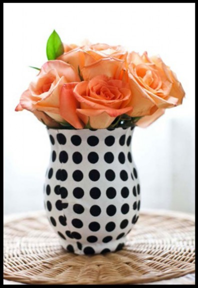
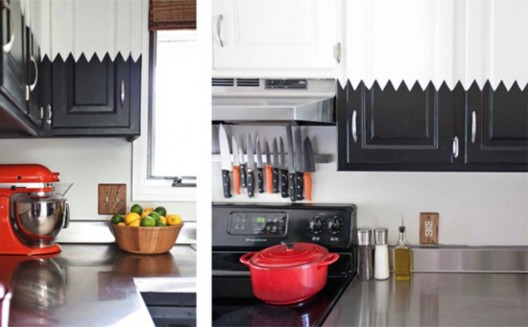
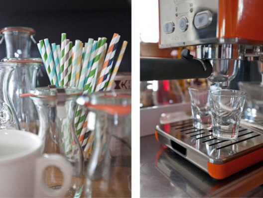
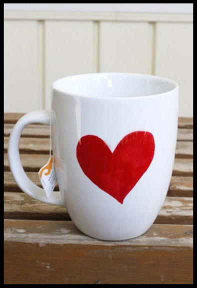
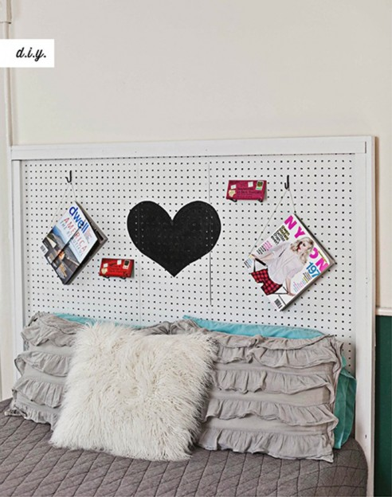
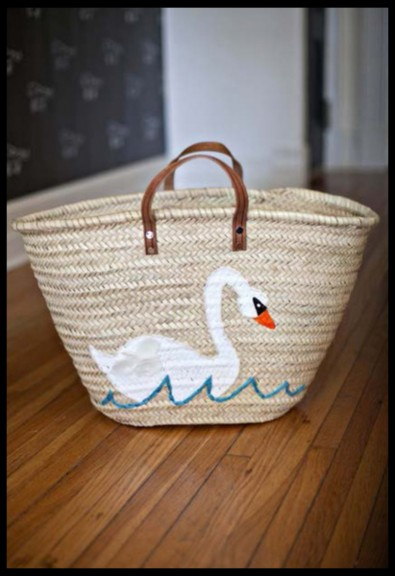
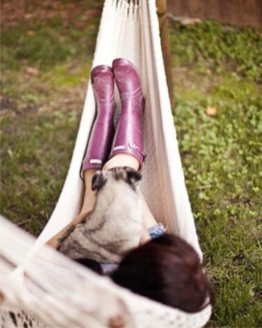
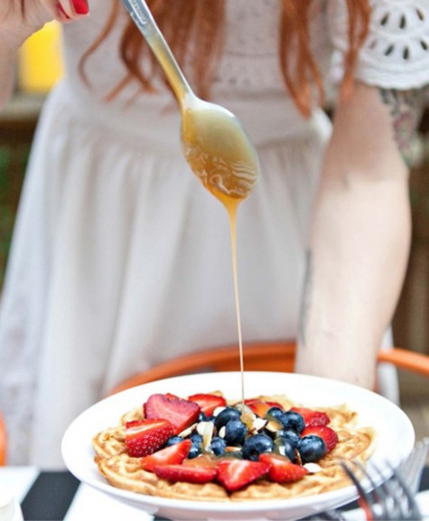
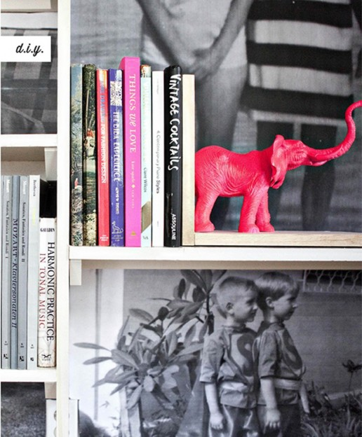

Copyright © 2014 by Elsie Larson and Emma Chapman All rights reserved.
Published in the United States by Potter Style, an imprint of Crown Publishing Group, a division of Penguin Random House LLC, a Penguin Random House Company, New York.
POTTER STYLE and colophon are registered trademarks of Random House LLC. Library of Congress Cataloging-in-Publication Data
Larson, Elsie, author.
A beautiful mess happy handmade home: a room-by-room guide to painting, crafting, and decorating a cheerful, more inspiring space / Elsie Larson and Emma Chapman.
pages cm
1. Handicraft. 2. House furnishings. 3. Interior decoration—Amateurs’ manuals.
I. Chapman, Emma, author. II. Title.
TT157.L255 2014
745—dc23
2014008902
Trade paperback ISBN 978-0-7704-3405-2 eISBN 978-0-7704-3406-9
Design by Jenny Kraemer
Photography by Janae Hardy
Cover design by Jenny Kraemer
Cover photograph by Janae Hardy
v3.1
For our father
the handiest man we know
Introduction
Highlight a Collection
DIY Patterned Coffee Table
DIY Quotable Wall Art
Focus on Details
DIY Yarn Throw Pillows
Choose Your Color Scheme with Care
DIY Hanging Plants
Design for Your Lifestyle
Furniture from Found Objects
DIY Restyled Coffee Table
DIY Make a Statement Wall
Celebrate: Birthday Cocktail Party
Flower Vases 9 Ways
Choose a Statement Piece
DIY Update your Old Refrigerator
Get Organized
DIY Kitchen Rug
Modernize Your Cabinets
DIY Colorful Accent Art
Create a Specialty Cart
DIY Personalized Aprons (2 Ways)
DIY Dream House Recipe Box
Celebrate: Cookie Decorating Party
Coffee Mugs 9 Ways
Mix Modern and Rustic Elements
DIY Custom Serving Dishes
DIY Hanging Glass Vases
Be Creative
DIY Simple and Colorful Side Table
Create a Restaurant Vibe
DIY Modern Cake Stands
Celebrate: Host a Happy Dinner Party
Cloth Napkins 9 Ways
Tips for Lighting
DIY Coffee Filter Flowers
DIY Patterned Duvet Cover
The Window Seat
Pops of Color + Texture
DIY Painted Dresser
DIY Scented Candles
Keep Scale in Mind
DIY Wall Art (2 Easy Ways)
DIY Guest Room Bed Frame
Jewelry Dish 9 Ways
Find the Perfect Place
DIY Make Over a Floor Lamp
Create a Happy Workspace
Stash Your Supplies
DIY Update a Flea Market Chair
DIY Cross-Stitch Stool
DIY Color Wheel Clock
Supply Baskets 9 Ways
DIY Outdoor Lanterns
Box Garden + Path
DIY Herb Garden
Work with Existing Features
Setting Up for Entertaining
DIY Restyled Outdoor Table
DIY Picnic Blanket
Celebrate: Ladies’ Backyard Brunch
Terra-Cotta Pots 9 Ways
DIY Plush Farm Animals
DIY Kids’ Art Gallery Wall
DIY Wagon Bookshelf
DIY Playtime Blanket
Celebrate: Kid’s Birthday Party
Throw Pillows 9 Ways
Bathrooms
Bathrooms
DIY Colorful Teak Towel Rack
DIY Bubble Bath Shelf
Toothbrush Holder 9 Ways
Odds and Ends
Odds and Ends
DIY Colorful Clothing Rack
DIY Jewelry Display (2 Ways)
DIY Make Your Own Wallpaper
DIY Scarf Curtain
DIY Dresser Makeover
DIY Bookends
Picture Frames 9 Ways
Acknowledgments
Index
Hi there! We’re Elsie and Emma and we are so happy you decided to pick up our book.
Over the past few years we’ve purchased our first homes and decorated them from the smallest corners to the biggest spaces. Before we started working on our homes, our blog, A Beautiful Mess, was mostly small crafts (think pillows and hair clips). If you had told us that someday we’d be building tables and making rugs and painting for fun on Friday nights, we would have laughed. Turns out, we got addicted.
A few years later, our homes look and feel nothing like they did the day we got our keys.
They look like us now. Weird? Maybe. Cool? We’d like to think so. Personal? For sure. Personality is the most important aspect of decorating for us. Who cares if your house is nice if your friends and family can’t see you in every room?
This book was born from the pure joy that big décor projects brought into our lives. It’s special. We’re geeky, but we’d even call it life changing. We hope you get the same goose bumps from your first giant DIY project (spoiler alert—you totally will).
Don’t be afraid to mess up.
We know it’s a giant cliché to say “there’s no right or wrong” and “you have to break the rules sometimes,” but it’s SO true. We made our fair share of mistakes and regrets from our home projects—but rest assured, it’s all fixable! Once we were trying too hard for a “classic” design and the result was a boring dining room. Good news—mistakes happen. Often the best lessons are learned when we go with plan B because the first idea was a big fail. No matter how awesome you are, you’ll mess up sometimes. Go with it!
Our ideas are only starting points.
The ideas in this book are specific to us. We photographed almost everything in our two homes this year. Think beyond the projects we share and find ways to make them your own! We know you’re creative, so don’t feel limited by what’s found within these pages— use it as a jumping-off point to express your personality in your space! As long as you start a project after you put down this book, we’ve played our part.
If you love it, love it.
Whether an idea seems trendy, obvious, awful, or even (gasp!) overdone, we encourage you to stop caring about what other people think. The point of decorating is to make your home more you. At the end of the day the only thing that matters is how you feel in your home. Does it help you unwind? Does it make you smile? We encourage you to create a space that caters only to you and the loved ones in your home. How sad would it be to invest all this time and money into your personal space, only to create a cookie-cutter something that doesn’t hold meaning for you? Trust yourself. Create a home that feels like you in the big ways and the tiny details.
Are you craving change in your décor? Are you slightly excited, but also a little nervous to try a big idea in your home? Here are a few questions to jump-start the process. We answered all of these while designing rooms for this book, and you have no idea how many lightbulb moments we had. We hope you do too!
1. List all your favorite spaces (homes you love, but also hotels, restaurants, retail stores, etc.). In the next column, list everything you admire about each place. What were you doing there? Did you like the smells and the music? What features stood out to you? How did that space make you feel? How would you describe the style of these rooms? Take your time—really think about your answers. When I made my list I was shocked by how the spaces I loved visiting contrasted from the spaces I usually pin on Pinterest. You might surprise yourself too!
2. List the activities you envision doing in each room. Sure, a dining room will be used for eating, but what else? Will you play cards with friends, share a bottle of wine, host a romantic dinner or a silly reality TV-themed party? Think about all the members of your household and how they will use the room. We firmly believe that rooms should be designed for living.
3. Choose colors that make you feel something. For now, don’t worry about what colors go in each room—that’s not the point. List all of the colors that you have a strong reaction to and how they make you feel, whether it is positive, negative, or a mixed emotion. List what the colors remind you of. List colors that you’ve loved in rooms, movies, or inspiring artwork.
4. This next one might be slightly embarrassing, but please go there with us! Make a list of 100 things about YOU. Things you love, quirks, aversions, memories, dreams, and little details that make you one of a kind.
Now that you’ve created these giant lists (they’d better be giant!), save them in the back of your book until you’ve finished reading. When you’re done, go through each list with a highlighter and pick out anything that could serve as inspiration for your new space!
We can’t wait to see what you create in your homes! Please keep in touch with us via our blog, abeautifulmess.com, and send us photos of your projects. We would love to see them!
If you need us, we’ll be at home trying more projects. We weren’t kidding when we said we are addicted!
XO,
Whether you’re drinking your morning coffee or coming home after a rough day, your living room should make you light up. It should be a place that invites games and naps and parties. There are no rules except this—make it your own. Challenge yourself to unlearn everything you ever knew about decorating. Erase every rule. Open up your mind to the endless ways to customize your space and make it feel like your cool place.
In this chapter you’ll see our polar opposite but equally party-worthy living rooms. We’re constantly rearranging and reimagining our spaces. If we had stuck to design rules, Emma never would have chosen to paint all her walls black and I surely wouldn’t have picked out a bright yellow couch. Moral of the story: it’s all good! Our spaces reflect our personalities and inspire us to invite guests into our homes.
GET THE LOOK: Floral Poster / DebbieCarlos.com

We all have possessions or collections we are proud of and cherish. Prominently displaying these items can add personality to your living room. Try hanging a collection of antlers on one wall or building/buying a special display case to house your cat figurine collection. Whatever items make your heart flutter—show them off!
D.I.Y. Patterned Coffee Table
GET THE LOOK: Couch / UrbanOutfitters.com, Pillow / Anthropologie.com, Rug / Target.com
Are you lusting over fancy patterned-wood tables? If you can’t find the perfect one for your space, consider making your own by covering an inexpensive table with balsa wood.
SUPPLIES
Ikea coffee table
black acrylic paint
rags
balsa wood
wax paper
3 different wood stains
scissors
wood glue
polyurethane
1. Paint the top and sides of your coffee table with the black acrylic paint and let dry (this will make any gaps pieces less noticeable).
2. Stain the balsa wood in three colors to cover a rectangle of 16 by 30 inches in the middle of your coffee table (or however big your table is).
3. Once your stain has dried, use scissors to cut triangles 4 inches tall and 5 inches wide. Arrange the triangles to fit the 16-by-30-inch space using half triangles at the beginning and end of each row.
4. Use wood glue to secure each triangle to the coffee table and place a heavy, flat object on top while the glue dries to prevent curling.
5. Stain enough balsa wood to cover the rest of the top and sides of the coffee table.
6. Cut pieces to lengths needed and make sure to angle the corner cuts for the top. Create a pattern out of paper if you need one.
7. Glue the pieces in place and, again, set heavy items on the wood as it dries.
8. Use 1 to 2 coats of polyurethane to seal the wood once your glue is dry.
D.I.Y. Quotable Wall Art
Here’s an easy idea for creating wall art that incorporates a favorite quote or phrase. It could be a quote that inspires you, makes you laugh, or is an inside joke between you and your loved ones.
SUPPLIES
wood
wood stain
clean rags
wood glue
paint or letter stickers
1. Purchase or cut a few (8 to 10) long pieces of thin wood. Ours were varying sizes between 2½ and 3 feet tall.
2. Stain the wood a few slightly different tones. Optional: add a coat of polyurethane.
3. Use two pieces of wood and wood glue to adhere all the pieces together.
4. Add your quote to the front of the piece with paint or letter stickers. Another fun option might be to paint over the stickers and after they dry peel them away to create a relief.
It’s important to choose the perfect couch or statement piece, but don’t forget about the little details that make a house a home. Add a few special objects to an uncluttered bookshelf or coffee table. Frame and hang a cute drawing from your niece in a gallery wall with the rest of your art collection (where it belongs!). And for a special night of entertaining, add a few small vases of fresh flowers to give your living room life.
GET THE LOOK: Pillows / SkinnylaMinx.com, Couch / Macys.com

D.I.Y. Yarn Throw Pillows
Can’t find throw pillows that suit your color scheme? Try making your own! Here is a simple technique for creating your own loom and weaving your way to custom pillows.
SUPPLIES
large wooden picture frame
nails
3 skeins of yarn (different colors if you like)
medium-thick interfacing
fabric (for the backs)
thread
Poly-fil
1. Create a loom by hammering nails along the top and bottom of the wooden frame.
2. String the yarn across all the nails and begin weaving your pattern, changing out colors as you go.
3. Once the front of the pillow is complete, iron on the interfacing to the backside of the woven yarn.
4.Stitch the woven yarn piece to a piece of fabric the same size, inside out, leaving a hole in one corner.
5. Flip through the hole and stuff with Poly-fil.
6. Sew up the hole and display your new pillow!
Do you feel stressed over major furniture purchases? They feel like the biggest decision ever! When I was shopping for pieces for our new home, many people warned me that a neutral sofa was more practical. This bummed me out because I had my heart set on something colorful.
Here’s what helped me: Before you make your first major furniture purchase, create a mood board and choose two or three fun colors to use throughout your rooms. Sticking with your favorite colors for major pieces is an easy way to create flow throughout the entire home. This solution is perfect for anyone obsessed with rearranging (cough, cough) because you can easily swap pieces from room to room! Choose your set of go- to colors that you love season after season and save the rest of the rainbow for accessories and accents.
GET THE LOOK: Wicker Chair / Amazon.com, Pillow / SkinnylaMinx.com, Blanket / WestElm.com
GET THE LOOK: Couch / ThriveFurniture.com, Rug / Target.com, Chairs / Amazon.com, Pendant Lamp / Ikea

Add life to your living room with these simple hanging vases made from recycled materials (you’re welcome, Mother Earth).
SUPPLIES
3 tin cans (labels peeled off) 3 colors of spray paint
Crop-A-Dile (or hammer and nail) twine or thin rope
scissors
and allow the paint to dry completely.
near the top of the cans.
of your top can to make a hanging handle.
than the top can.
that it has drainage but the outside (colorful) cans won’t leak onto your living room floor.
DESIGN F OR YOUR L IF EST Y LE
Every room in your home should be designed for your lifestyle! If you notice a space that is rarely being used, reimagine its function. What do you use your living room for? Parties and game nights? Watching TV and movies after a long day? Hanging out with your dogs? Whatever your favorite activities, design your room to be a comfortable and welcoming space to do just that.
F UR NITUR E F ROM F OUND OB J EC TS
Maybe you’re living on a tight budget or maybe you love the thrill of a good flea market hunt! In either case, found objects can make incredible furniture. Make a pretty side table by stacking vintage file cabinets. Repurpose an old ladder by adding shelves and a fresh coat of paint for an adorable bookshelf! Search for interesting industrial pieces, like the vintage retail shelf seen here, to hold plants and books you want to display.


GET THE LOOK: Couch and Love Seat / ThriveFurniture.com, Flokati Rug / UrbanOutfitters.com
Update an old, scuffed-up coffee table for your living room. A little paint and pattern can go a long way!
SUPPLIES
coffee table sandpaper tack cloth balsa wood wood glue primer
white gloss latex paint scissors
black electrical tape
unwanted areas and used scissors to cut balsa wood to fit over the existing design.
paint, allowing drying time in between each coat.
other at different heights to create a zigzag pattern.
SUPPLIES
thick card stock (for stencil) scissors
painter’s tape oil pastels
clear spray sealer small paintbrush
clear (water-based) polyurethane*
*Do not use oil-based polyurethane for this project as it can change the color of your wall paint.
the same stencils if you want to do multiple tracings at once.
design.
the clear polyurethane to help seal the oil pastel.
CELEBRATE

BIRTHDAY COCKTAIL PARTY
Once you’ve created a living space that you love, why not host a birthday cocktail party? As if we even need an excuse to invite friends over for a drink. Ha! Have fun with decorating your space, planning a few things to snack on, and mixing up a specialty birthday cocktail!

MAKES 1
3 ounces marshmallow vodka 1 ounce cream of coconut
2 ounces amaretto
3 ounces Godiva white chocolate liqueur Sprinkles for the rim
In a martini shaker combine the marshmallow vodka, cream of coconut, amaretto, and Godiva white chocolate liqueur. Add ice and shake. Serve in a glass rimmed with sprinkles.
You can also fill the floor with colorful balloons. No helium needed!



COVER A GLASS VASE IN PATTERNED FABRIC AND SEAL WITH MOD PODGE.
PAINT THE ENTIRE VASE WHITE AND THEN ADD DOODLES WITH A SHARPIE.
COVER IN GLITTER! COME ON, YOU KNOW YOU WANT TO.

PAINT WITH YOUR FAVORITE METALLIC TONE AND ADD POLKA DOTS.
GLUE COLORED LEATHER TO THE OUTSIDE.
COIL THIN ROPE OR RIBBON AROUND THE OUTSIDE OF A VASE.

USE NATURAL FABRICS OR TWINE TO COVER YOUR FAVORITE VASE.
CHALKBOARD PAINT! YOU KNOW WE HAD TO.
PAINT ON YOUR FAVORITE QUOTE OR SONG LYRIC IN YOUR HANDWRITING.

A kitchen needs to be an inspiring space. It doesn’t have to be large, or expensive, or perfect, but it absolutely must inspire. A beautiful kitchen makes cooking a treat, even if you’re making a pot of ramen.
The kitchewn is our favorite room to make over. It’s crazy what a difference a little paint and some fresh flowers can do. In this chapter you’ll see how we made over our dated, dark-wood kitchens and gave them a fresh dose of color!
Want to know a nerdy secret? We’re also passionate about organizing our kitchens. Reorganizing cabinets and making new space for hard-to-store items is such a rewarding way to spend an afternoon. We geek out over cleaning, purging, and coming up with new solutions to store stuff. A cozy kitchen is a mix of both practical and eye-pleasing solutions. Now, let’s get to it!

Consider adding a statement piece that reflects your personality to spice up your neutral kitchen! You can go bold with vibrant artwork, colorful tile, or a vintage-inspired appliance. Our retro-style refrigerator was a gift from my husband when we moved into our home. It makes me smile every day and is a great conversation piece when guests visit for the first time.
GET THE LOOK: Refrigerator / BigChill.com
d.i.y. Update Your Old Refrigerator
If a fancy new fridge doesn’t fit your budget this year, no biggie! Try updating your existing fridge with electrical tape. The tape can easily be removed (in case your lease is up!) and is super easy to wipe down and clean.
SUPPLIES
white electrical tape scissors
rugs.
the tape to the fridge.
Who doesn’t love an organized kitchen? Even in the smallest space you can make room for the things you need to keep on hand by adding shelving, baskets, and labels! These locker baskets were an inexpensive find (from Amazon.com) and they are the perfect way to optimize the space above cabinets. Labeling a set of drawers is a fun way to keep spices and snacks where they belong. Have a free wall? Consider adding open shelving for constantly used items like glasses, pitchers, or a French press.
Add some extra color to your kitchen floors with a bright hand-painted rug. You can use any colors or patterns that suit your kitchen aesthetic.
SUPPLIES
plain kitchen rug ruler
marker fabric paint paintbrush
aerosol polycrylic protective finish (water based)
choosing, covering over the marker lines.
the instructions on your fabric paint brand—some require heat to set permanently.
If your kitchen is filled with dark wood cabinets that just don’t suit your modern tastes, update them! Try giving them a fresh coat of paint in contrasting colors. Or you could change out your cabinet hardware; you’d be surprised how much this can transform the look of your space.

It can be a challenge to add artwork to your kitchen walls. Most of your space may be taken up by cabinets, shelves, or other storage solutions. Create a colorful word or short phrase to add a bit of whimsy to your kitchen walls. You can use found wood to cut your own design or buy premade letters from a craft store.
SUPPLIES
scrap paper pencil scissors
old wood pieces saw
scrap wood wood glue paint
picture hanger hardware
letters to the wall you plan to hang them on, to make sure.
CR EATE A SP EC IALT Y CART
We don’t always have the luxury to prepare a four-course meal every time we are in the kitchen. Often we simply want to make a quick cup of coffee or mix a cocktail for a friend. If you find you have specific needs that arise over and over again, try buying a metal cart (from a flea market or thrift store) and customizing it to suit your space. Make your own bar cart by assembling your favorite liquors and mixers. Or create a coffee cart so you have a spot to store your coffee beans, grinder, coffee maker, and all the accessories you need to make a great cup of joe.

d.i.y. Personalized Aprons (2 Ways)
Whether you plan to give these to your mom or keep one for yourself, personalizing an apron is such a simple and relaxing project! Here are two ideas to get your own creative juices flowing.
SUPPLIES FOR ABSTRACT APRON
plain canvas or cotton apron spray bottle of water
fabric or acrylic paint
your apron.
circles.
SUPPLIES FOR ILLUSTRATED APRON
plain canvas or cotton apron pencil
permanent marker
happy with the placement.
Create a special recipe box for your kitchen or as a housewarming gift for a friend. Customize this project to match your dream (or actual) home!
SUPPLIES
construction paper scissors
glue
cardboard house box (found at many craft stores; ours is from Hobby Lobby) glue
Mod Podge (optional)
the house.
CELEBRATE

COOKIE DECORATING PARTY
You might not think to throw a party in your kitchen. Most kitchens are filled with just a little too much chaos, right? Cooking tends to be messy, cluttered, sometimes fast paced, or even a little smoky. But often a little organized chaos can lead to some very special memories. Why not invite a few family members over to bake and decorate cookies? This is a special activity during the holidays, but it can become a tradition for any time of the year.

Keep it simple. You don’t need tons of decorations to have a good time with your grandma. Focus on what’s important
—spending time together.
You might not think to throw a party in your kitchen. Most kitchens are filled with just a little too much chaos, right? Cooking tends to be messy, cluttered, sometimes fast paced, or even a little smoky. But often a little organized chaos can lead to some very special memories. Why not invite a few family members over to bake and decorate cookies? This is a special activity during the holidays, but it can become a tradition for any time of the year.
Our Favorite Chocolate Chip Cookies

MAKES 2 DOZEN
3½ cups all-purpose flour 1¼ teaspoons baking soda 1½ teaspoons baking powder 2 teaspoons salt
1¼ cups softened butter 1½ cups brown sugar
1 cup granulated sugar 2 eggs
1 teaspoon vanilla extract
2 cups dark or semisweet chocolate chips
Preheat the oven to 350°F. In a bowl whisk together the flour, baking soda, baking powder, and salt. Set aside.
Cream together the softened butter and sugars. Add the eggs and vanilla extract and stir until just combined. Add the flour mixture to the creamed butter and mix until just incorporated. Stir in the chocolate chips until just combined.
Spoon the batter onto a baking sheet lined with parchment paper. Bake for 14 to 16 minutes, until the edges are just beginning to brown. Remove from the oven and move to a cooling rack. Serve warm with a glass of milk.
TIP: After using Sharpies on porcelain, simply bake the piece at 350°F for 30 minutes before use. For best results, always hand wash. If you are looking for a paint that is dishwasher safe, try Pebeo Porcelaine 150.
ADD DOODLES WITH A SHARPIE.
METALLIC SHARPIE? OH YES.
PAINT THE ENTIRE MUG WITH METALLIC PAINT, EXCEPT FOR THE RIM.
DOODLE EDGES IN RED SHARPIE!

CREATE YOUR OWN “HIS” AND “HERS” MUGS WITH A LITTLE PAINT.
COMPANION MUG.

PUT YOUR HEART ON YOUR SLEEVE … OR, UH … MUG.
ADD PERSONALITY WITH A LITTLE FACE ON THE FRONT OF YOUR MUG.

ADD A PATTERN WITH SHARPIES.
We love dining rooms because they create the setting for one of everyone’s favorite pastimes— eating. Don’t even try to pretend you’re not in this club. But when you really think about it, the dining room is a place where some of the most precious memories in your home are made. It is around the dining room table that we laugh with friends over cocktails, make big announcements over coffee with our parents, or share a laid-back but intimate breakfast with our significant other.
When we were in Palm Springs last spring I realized that the thing my dining room was missing was a restaurant vibe. I made lists of all the places I loved eating at and why. The results surprised me because the places I loved to be were very different from the rooms I liked in photos on Pinterest. Keeping with that theme, I finished designing my dining room with inspiration from all my favorite foodie spots and bars. The result was a cozier, happier dining room that is super versatile for parties year-round!
The best advice we can give for designing your dining room is to forget everything you think you know about what makes a nice dining room and create a place that’s comfortable and exciting to eat in. Make meals a daily treat and a cherished ritual.
GET THE LOOK: Globe Lantern/Young House Love for ShadesOfLight.com
MIX MODER N AND R USTIC ELEMENTS
Mixing unexpected styles can add a lot of interest and energy to a room. This strategy is especially great if you are the kind of person who just can’t commit to one particular style, or can’t afford to change décor with every trend you love. You can’t see it, but I’m raising my hand: guilty as charged. Try mixing a rustic wood table with modern plastic chairs.
Combine a graphic rug with a classic chandelier. Whatever look you’re going for, find a few small elements that might work together and combine them in one room.
Create your own custom serving dishes inspired by classic patterns, like Blue Willow china.
SUPPLIES
plain white dishes
blue Sharpie or ceramic pen
longer, try hand washing.
If your dining room table is often too crowded to add fresh flowers, consider making a few hanging vases.
SUPPLIES
twine duct tape
glass bud vases
of the vase again and back up again. Secure with tape.
to finish.
Shopping for dining room chairs is intimidating (and expensive!). Rather than biting the bullet on a new set, why not collect random chairs from flea markets and estate sales and give them a fresh coat of paint? Choose a color that really inspires you. This idea can save you more than a pretty penny, while creating a look that has personality and charm.
A painted piano can also serve a double purpose as an unexpected serving space. Layer it up with tiered cake stands and it’s perfect for a quick impromptu dinner party with friends. I love a piece that can be used two ways, don’t you?
d.i.y. Simple and Colorful Side Table
Are you in need of additional serving space to host buffet-style dinners or to hold your growing liquor collection? Try making your own simple side table to match the colors of your dining room.
SUPPLIES
wooden sawhorse
wooden board for tabletop (36 by 20 inches) paintbrushes
primer
white latex paint orange latex paint wood glue
object on top while the glue dries. If you plan to have lots of weight on this table, you should add screws to secure the two pieces together.
CR EATE A R ESTAUR ANT VIB E
Defy tradition and get inspired for your dining room by your favorite cafés and coffee shops. Focus on happy vibes and cheerful times rather than matching furniture and décor.
In our space, we created a custom lighting fixture with a dimmer switch that creates a interesting atmosphere for daytime or evening hangouts. What else? Think bar carts, quirky buffet tables, comfortable seating, and interesting ways to serve appetizers—just to name a few! Bottom line: create a dining room that feels like your favorite restaurant and you’ll find yourself inviting friends over much more often!
Here’s an easy way to create cake stands to fit your own style. Use any patterned paper and paint color you like to make your cake stands unique.
SUPPLIES
patterned paper scissors
glass plates and cups Mod Podge
spray primer spray paint crazy glue
and then seal.
CELEBRATE

HOST A HAPPY DINNER PARTY
DECOR INSPIRATION Don’t stress yourself out with over-the-top decorations if you don’t have the time or budget. Instead spend that money on a good bottle of wine for guests! If you do have the resources to add a few fancy touches, focus on table décor—most of the evening will be spent around the dining room table!
Create handmade menus for each setting to greet guests as they arrive.
Reuse clean coffee or soup cans as vases for colorful flowers or poke holes in them and add tea lights.
Use bandannas as cloth napkins to add a pop of color.
This is probably the most daunting question for a dinner party. A few things to consider before you dive into any recipe book or food blog: budget, your cooking skill level/comfort zone, and special dietary needs of guests. These three factors can really help you plan your menu.
• Go casual. Just because it’s a dinner party doesn’t mean it has to be fancy. You can totally host a taco and beer night.
• Be collaborative. A great way to keep a party budget friendly is to invite guests to join in preparing a dish. Have one couple bring the salad or a side dish while another guest brings dessert.
• Try classic dishes with a twist. Unexpected flavors can be fun and a great way to start conversations. Prepare a menu of gourmet comfort foods. Try vegan versions of your childhood favorite dishes. Choose a specific theme or ingredient and incorporate it into every course (lavender everything!).


MAKES 1
½ peach, cubed Juice of ½ lime
4 basil leaves, chopped 4 mint leaves, chopped 2 ounces white rum
1 ounce simple syrup Club soda
In a glass, combine the peach cubes, lime juice, basil, mint, rum, and simple syrup. Stir to combine. Add ice and top with club soda. Serve chilled.
TIP: Use fabric paint for best results. Read brand instructions, you may need to heat-set the paint to make it permanent!
STAMP ON A FRUIT-INSPIRED PATTERN.
PAINT ON AN ABSTRACT OR SIMPLIFIED FLORAL PATTERN.
USE PERMANENT INK TO ADD A HAND-DRAWN PATTERN. SEW ON A DECORATIVE EDGE.
PAINT ON A GRAPHIC DESIGN. BE BOLD!

USE FOAM LETTERS TO STAMP ON A QUOTE OR SONG LYRIC.
SEW ON A MIX OF COLORFUL POLKA DOTS USING SCRAP FABRIC.
USE PERMANENT INK TO DRAW ON A NAUTICAL DESIGN. SEW ON A COLORFUL EDGE.
USE FABRIC DYE TO CREATE A COLORFUL OMBRE PATTERN.

USE COLORFUL THREAD TO STITCH ON A BORDER AND ADD TASSELS!
Bedrooms are an intimate affair. Your bedroom is your fortress of solitude. It should be designed for no one else but you and your significant other. This is a room that should feel VERY you. You aren’t entertaining in this room. It’s all you, baby!
Your bedroom should be where you want to wake up and where you can relax before falling asleep every night. It should feel familiar. It should be where you want to retreat after a long day. After all, the bedroom is where you do so many personal things, like get ready for a big day, read a favorite guilty pleasure book, or snuggle with your best friend.
Throughout this book we talk about finding ways to use your favorite colors or incorporate elements from your favorite hotel or restaurant. In your bedroom you can get even a little more personal. What colors or textures make you feel safe? What kind of music helps you wake up and get ready in the morning? Find ways to incorporate these feelings into the décor of your bedroom.
Of all the rooms in a home, good lighting in the bedroom is most important. At night you want a room that is relaxed, private, and cozy. Lamps and diffused light sources are wonderful. A string of twinkle lights over a bed or strung around a vintage ladder can create the loveliest vibe.
In the daytime, you want the exact opposite! There’s nothing lovelier than waking up to sunshine and beautiful natural light. Light airy curtains, like this lace set, are perfect for letting in gorgeous light. Design your room from day to night with both natural light and lamps that flatter your space and create a mood that makes you happy.
GET THE LOOK: Capiz Pendant / WestElm.com, Floral Poster / DebbieCarlos.com, Lamp / UrbanOutfitters.com

Creating your own faux flowers from coffee filters is an easy and inexpensive way to add texture and a soft touch to any space. Try adding these flowers around the frame of a mirror, along the top of a window, or above your bed.
SUPPLIES
coffee filters scissors thumbtacks
an inch of the filter from the top.

Here’s a simple technique to create your own customized duvet and pillow covers. Add personality to your own bedroom or create a cute housewarming gift for a friend. (Newlywed gift? I think so!)
SUPPLIES
craft foam scissors cardboard glue fabric paint
white comforter and sham set
onto cardboard squares to create a stamp. Make one for each color in your design.
comforter and push down on each corner. Put some cardboard under the top layer of your comforter so the paint doesn’t bleed through to the other side.
until the whole area is completed.
may need to iron the fabric so the paint is heat-set and permanent if you aren’t using matte paint. Then you are ready for bedtime!
There are endless possibilities for the window seat. If you’ve been lucky enough to find a space with one, it can be a place to read or a spot to store a collection or display beautiful things. I love it best when it’s a little bit of both! Add a beautiful plant, a good book, a soft blanket, and personal elements like a guitar and some pillows. Now it’s the perfect space to cozy up and relax!

Bedrooms shouldn’t be boring! Don’t be afraid to fill your space with color and texture if that’s what makes you happy. Add a statement wall like this hand-painted wall behind our bed, a textured comforter, a fun natural rug, or a large piece of bold art.
GET THE LOOK: Yellow Lamps / WestElm.com, Bedding / UrbanOutfitters.com, Pendleton Pillow / etsy.com/shop/RobinCottage
Furniture can be such a commitment, right? You might not have the budget to buy that perfect piece you’ve been dreaming of (yet). You may have a few hand-me-down or thrift- store-bought items in your home that just don’t quite feel like you. A great option is to give them a facelift with a fresh coat of paint! You could choose to cover the entire surface, just the faces of the drawers, or just the legs of a chair or table, or add a pattern by masking off areas with painter’s tape. Use colors you love to spruce up a piece of furniture you aren’t totally happy with.
you can always repaint next month if you end up hating it. No big deal!
Not sure what to do with those cute photo booth pictures? The shape can be a little challenging to work with, but try cutting balsa wood to fit your frame and photo to display on your walls.
Create your own quirky candles with your favorite scents. These are super cute to add to your bedside table or to give to a friend. You can use any glass or ceramic objects that you like, so keep your eyes peeled on your next flea market shopping trip.
SUPPLIES
glass or ceramic objects
plain candle wax (can be found at most craft stores) essential oils
wicks wax paper paint
Pour into the vessels.
small hole in the middle for the wick to poke through.
your objects for color.
You don’t want your room to feel too full, making you feel boxed in. You also don’t want your space to feel too unintentionally bare. I’m all for minimalism, but your space shouldn’t feel like you’re still moving in and haven’t had time to set everything up yet. Note the size and scale of your room. If you have high ceilings, you might consider adding elements that draw the eye up, filing the space. This could include an oversized bedframe, hanging lanterns, a large tapestry, or a gallery wall that fills up the space. If your bedroom is on the cozy side, avoid large pieces of furniture or low-hanging light fixtures.
d.i.y. Wall Art (2 Easy Ways)
SUPPLIES
copy paper watercolor paints paintbrushes white canvas acrylic or craft paint
Sharpie pens or markers
paper. Choose a few colors you love and paint a thin coat of color over the picture. You could use watercolor paints or acrylic paints diluted with water.
favorite colors. Paint on a few layers of one design (like messy flowers), allowing each layer to dry in between coats. Use different color Sharpie pens or markers to add messy borders to your designs.

SUPPLIES
enough pegboard to cover 50 by 60 inches (we used three pieces measuring 12 by 50 inches, 24 by 50 inches, and 24 by 50 inches)
1 (12-by-1½-by-60-inch) wood piece (we used all pine) 2 (2-by-2-by-60-inch) wood pieces
3 (1-by-1½-by-60-inch) wood pieces (we used all pine) 2 (1-by-1½-by-48-inch) wood pieces
screws screwdriver drill
primer and colorful paint (optional) paintbrushes (optional)
wood accent pegboard hooks
60-inch) pieces in the back (see the step-by-step images).
by-1½-by-48-inch) wood pieces.
TIP: We like using Mod Podge to seal our designs in place after they’ve dried, no matter if they are created with paper, paint, or colorful pens.

GLUE FABRIC OR RIBBON TO THE UNDERSIDE OF A GLASS PLATE.
HI THERE, FUNNY FACE. PAINT A LAYERED DESIGN ON THE UNDERSIDE OF A GLASS PLATE.
PAINT THE UNDER-SIDE EDGES OF A GLASS SURFACE. ONCE DRY, GLUE ON FABRIC OR PAPER.
ADD A VIBRANT COLOR WHEEL DESIGN!
GET YOUR GLITTER ON! GLUE A THICK LAYER OF GLITTER AND SEAL WITH EPOXY.
CREATE A COLLAGE FROM FOUND PAPERS AND GLUE TO THE UNDERSIDE OF A GLASS DISH.

TRY PAINTING ON A BLOCK DESIGN. USE MASKING OR PAINTER’S TAPE TO KEEP LINES STRAIGHT.
GLUE A PRETTY FLORAL PATTERNED FABRIC TO THE UNDERSIDE OF YOUR PLATE.
PAINT ON A QUOTE OR FAVORITE SONG LYRIC!
A home studio, whether a closet or a full room, is a luxury! Unfortunately, in our experience, the studio is the most difficult room in the home to keep organized and nice. Our studio often has the aesthetic of an indoor garage sale or a sad day-after-party vibe. It’s HARD. If you’ve struggled with your home studio, we can relate to you!
In this chapter you’ll find our storage solutions and inspirations for our ever-evolving studio space. At the end of the day, we live by one simple rule—Whatever makes you feel creative is best!
GET THE LOOK: Magazine File / Martha Stewart for Avery, Lamp / UrbanOutfitters.com
F IND THE P ER F EC T P L ACE
Most rooms in a house are already designated spaces. You don’t really get to choose where the kitchen goes. But a studio or home office is a different story. First consider if you can dedicate an entire room to your studio. Do you have an extra guest bedroom or a finished basement or attic room? And if you can justify the space, consider converting a closet into an office or installing a fold-out table in a cabinet or wardrobe that could become your crafting corner. Find a space, no matter the size, that can be all yours.

GET THE LOOK: Couch/Flea Market
d.i.y. Make Over a Floor Lamp
Add some color and personality to your favorite floor lamp.
SUPPLIES
plain white lampshade
object for stamping (we used a wine cork) fabric paints
paintbrushes
stamp looks too irregular, you can touch up any spots using a paintbrush.
CR EATE A HAP P Y WOR K SPACE
Your studio space should, above all, make you feel happy. Decide what elements need to be present for you to feel inspired and motivated to work. Move your studio to an area in your home with a lot of sunlight if this helps you create. Add candles or cozy touches to your space that will stimulate all your senses and make you feel excited to make something in this space.
Studios of all different sizes often face a similar challenge—storage. You don’t want your space to feel too cluttered, so find ways to stash your supplies to keep your space tidy. You could add a wall of labeled storage boxes to your craft room, or install a pegboard to hang tools or utensils. Use filing cabinets as the legs to your desk or stack a few vintage suitcases into a side table. Make these items work double duty as a storage solution and a piece of furniture.
d.i.y. Update a Flea Market Chair
The perfect office chair can be so hard to find! You may need a chair for your desk or sewing station, or to decorate a corner (like a mini bookshelf). Whatever your needs, consider updating an old chair to add personality to your space.
SUPPLIES
metal chair with plastic seat gold spray paint for metal
white gloss spray paint for plastic scissors
card stock pencil
small paintbrush gold craft paint
plastic first, or you can check to see if the legs will detach from the seat).
pencil onto the surface of the chair (seat and back).
Revamp a studio stool with this easy reupholstering technique.
SUPPLIES
graph paper colored pencils craft paint
½ yard burlap fabric yarn
needle scissors staple gun
copy the squares of color onto ½ yard of burlap.
go.
No office is complete without a clock, right? Make a colorful statement with this functional item.
SUPPLIES
foam board X-Acto knife
6 colors of paper ruler
pencil scissors glue
clock kit (available at most craft stores) white craft paint
chipboard number stickers
onto the foam to create your color wheel.
per the instructions through the hole.
the numbers in the correct positions.
TIP: Fabric or acrylic paint works well on these baskets. Feel free to use a heavy hand with the paint, as these won’t get washed so there’s less chance the paint will chip or crack.
PAINT ON A POLKA DOT DESIGN.
USE MASKING OR PAINTER’S TAPE TO EASILY ADD A PAINTED STRIPE DESIGN.
ON WOVEN BASKETS, USE A TAPESTRY NEEDLE TO ADD A COLORFUL YARN ACCENT.
STITCH ON AN ABSTRACT HEART IN THE CENTER.
PAINT THE BOTTOM HALF OF THE BASKET FOR A FUN POP OF COLOR.
STITCH ON A NOVELTY PATTERN.

USE YARN, PAINT, AND FABRIC TO ADD AN ANIMAL TO YOUR BASKET.
ADD SOME SUBTLE PERSONALITY WITH A LITTLE PAINT AND A FEW HOMEMADE TASSELS.
STITCH ON A POCKET (USE A STURDY FABRIC, LIKE LEATHER OR CANVAS) TO HOLD SUPPLIES.
There are few things in life more fulfilling than creating an outdoor oasis. You don’t need a giant yard to create a charming space. A porch is the perfect place for summertime parties, grilling, and sipping wine at sunset.
It’s time to get inspired to decorate your outdoor space. Whether you dream of planting a garden, building a killer dining area, or setting up a cozy fire pit, use this chapter as your jumping-off point. Investing in your outdoor space will pay off for years to come!
MOOD LIGHTING
Lighting is one of the most important choices you’ll make when designing your outdoor space. Add outdoor string lights, lights in trees, and candles to create an inviting area. Don’t be afraid to mix options, because in the backyard the more lighting, the merrier.
Add a warm glow to your next outdoor get-together with these personalized lanterns. You can add any color or pattern you prefer!
SUPPLIES
black kerosene lanterns paper straws
white craft paint Q-tips
small paintbrush
paint and use the straw end as a stamp to make circles on your lamp surface. Repeat until the whole surface is covered.
pattern. Repeat until the whole surface is covered.
create a line texture on your lantern. Repeat until the whole surface is covered.
When we were growing up, our parents always kept a large garden, but for whatever reason we were always a little intimidated to grow our own. Instead of starting with a gigantic garden, why not try a simple raised box garden? We started with a short list of vegetables and herbs. Box gardens are cool because they can easily be expanded in years to come as your interest (and, ahem, skill level) grows. Be sure to use untreated cedar for your box; you don’t want any chemicals in your food!
Are you dreaming of having a garden one day but your “backyard” is currently nothing more than a fire escape? Don’t let this tiny detail stop you. A great way to work with limited space is to start a potted herb garden. And if you like cooking at home, you’ll love having your own fresh herbs within reach!
SUPPLIES
ceramic pots craft paint brushes Sharpie marker potting soil
rocks and herb plants (start from seeds or buy plants and keep them going all season)
allows the water to better soak into the soil before the excess drains out the bottom.
seeds. You can buy most herbs (as well as vegetables and flowers) already sprouted and
work to keep them alive and thriving.
WOR K WITH EX ISTING F EATUR ES
What do you do if your budget just won’t allow for you to build on a new deck or install fancy outdoor lights? You might feel a little lost on how you can make your outdoor space feel like you without breaking the bank. Your best bet is to work with existing features.
Maybe you can’t repaint your siding, but what about painting the back door? Can’t splurge on matching outdoor furniture? Try using old, mismatched chairs (if you don’t have some, you could thrift some) and giving them new life with outdoor paint and weather- friendly fabric like oilcloth. Show off your personality through the colors and patterns you add to existing elements in your space and have fun with it!

SETTING UP F OR ENTERTA INING
Don’t forget to add elements to your outdoor space with entertaining in mind. Add a cozy hammock or outdoor seating that will get people active or encourage conversation.

GET THE LOOK: Acapulco Chairs / Amazon.com, Hammock / etsy.com/shop/hamanica
Reimagine an old piece of outdoor furniture and give it a new life.
SUPPLIES
wooden or metal outdoor furniture piece brushes
primer indoor/outdoor paint polyurethane

TIPS:
• If your surface is super smooth, try roughing it up with heavy-duty sandpaper before priming. This can help paint to stick to the surface better.
• Always check paint and sealer cans for dry time suggestions.
• If you are not painting the entire surface, tape off the areas with painter’s tape before you begin.
• Give yourself permission to get creative with your color choices! No matter how well we try to protect our outdoor furniture, it’s not going to last forever, so have fun with it.
Note: Polyurethane can slightly change the color of the paint it seals, especially whites.
GET THE LOOK: Orange Chairs / DesignFormFurnishings.com

Make a picnic blanket to match your outdoor aesthetic. You can use this blanket at your next outdoor party or take it with you on a picnic lunch to the park with your partner.
SUPPLIES
scissors craft foam glue cardboard
small paintbrush fabric paint
white cotton tablecloth
cardboard backing to create your stamp.
the tablecloth.
covered. Allow to fully dry before use. Make sure to read the instructions on your fabric
paint brand—some require heat to set permanently.
CELEBRATE

LADIES’ BACKYARD BRUNCH
DECOR INSPIRATION Outdoor spaces often don’t need as much added decoration, depending on the season. Add a few temporary touches to make your space feel cheerful.
Throw a garden party in your outdoor space (no garden required!). Host a party for Mother’s Day or just to get your favorite friends together on the weekend. Serve up your favorite breakfast foods and drinks and enjoy the morning together.
Use tape (such as washi or colorful duct tape) to add pattern to an outdoor table.
Add a home-made banner over the drink or food area. Tissue paper flowers and streamers are always festive.

Cinnamon and Olive Oil Waffles
MAKES 6 TO 8 WAFFLES
1½ cups flour
½ cup cornstarch
1 teaspoon baking soda 1 teaspoon salt
1 tablespoon brown sugar
½ teaspoon cinnamon 2 cups buttermilk
⅔ cup olive oil 2 eggs
1 teaspoon vanilla extract
In a large bowl, combine the flour, cornstarch, baking soda, salt, brown sugar, and cinnamon. Whisk. Stir in the buttermilk, olive oil, eggs and vanilla extract. Allow the batter to rest for 20 minutes. Follow waffle iron directions to cook the batter. Serve warm with lots of toppings: fresh berries, banana slices, chocolate chips, and sliced almonds. And don’t forget the maple syrup!
Don’t you just love breakfast foods!? You can keep the fare light and simple with a bagel and cream cheese spread. Or get more creative with a mix of sweet pastries, interesting flavored quiches, or a flight of bacon. Give guests options to mix flavors with their favorite breakfast breads, such as pancakes or waffles.
For drinks, consider setting up a mimosa or Bloody Mary bar. Provide the basics plus special ingredients to allow guests to create their own unique flavors. For example, if you are hosting a mimosa bar, be sure to have a few champagnes available and also a sparkling wine or prosecco. It’s also a good idea to have a nonalcoholic option available when hosting a party. Let guests mix their own with a juice of their choice, such as orange, grapefruit, or blueberry. Top the drinks with fresh berries or fruit slices.
TIP: Paint only the outside of the pots. The inside should remain unpainted in case you’d like to grow herbs or edible plants in your decorative pots.
ADD A WHITE AND METALLIC POLKA DOT DESIGN IN PAINT.
USE MASKING OR THIN PAINTER’S TAPE TO ADD A STRIPE DESIGN IN PAINT.
PAINT ONLY THE BOTTOM HALF OF THE POT WITH A GRAPHIC EDGE.
ADD A BOLD BLACK-AND-WHITE PATTERN.
PAINT ON A FREEHAND GEOMETRIC DESIGN.
GLUE ON FOAM PIECES AND THEN SPRAY-PAINT THE ENTIRE POT FOR A RAISED DESIGN.
TRY ADDING COLORFUL POLKA DOTS!
PAINT A RAINBOW OR COLORFUL STRIPES. DON’T BE AFRAID OF MESSY LINES!
PAINT THE POT WHITE, THEN ADD A FAVORITE QUOTE OR SONG LYRICS IN SHARPIE.
While we don’t have children of our own yet, my playroom is one of the most loved spaces in our home. Our nieces and nephews and our friends’ kiddos have spent endless hours entertained. I love that they look forward to coming over just to hang out in their own little retreat!
A playroom or nursery should feel whimsical while also being safe and functional. Don’t be afraid to try out colors different from the rest of your home. This space should foster kids’ creativity and encourage them to play, explore, and create. If you are at the stage in life where you get to decorate a playroom or nursery, have fun with it!
GET THE LOOK: Custom Dog Plush / www.SleepyKing.net, Daisy Lamp / Ikea
A swing in the playroom is every kid’s dream, and the best part is, it’s totally doable! When choosing a spot for your swing, remember that you’ll have to be flexible and work with the existing placement of the studs in your ceiling. We had our homemade swing professionally installed for safety. It’s important that the swing is able to hold the weight of an adult. Choose a fun color to paint your swing base and go for it. You’ll be glad you did!
Playrooms are meant to be a fun place, so choosing a happy statement design for your wall only makes sense! Gather your painting supplies and choose a color that speaks happiness to you, like this confetti-inspired wall!
Turn your animal sketches into reality by creating your own plush farm animals. Simply sketch out a few patterns and bring them to life with cotton fabric, Poly-fil, and yarn. You could also buy a few plain plush animals and add your own embellishments, like a felt hair bow or multicolored yarn for a horse’s mane.
SUPPLIES
scrap paper scissors fabric
felt yarn needle thread Poly-fil
fabric glue
of the body of each animal (this should include the head, body, and feet). Cut out two pieces of fabric from this pattern that mirror each other.
then stuff with Poly-fil. Stitch up the hole.
If you have creative kids in your life, then your refrigerator, office drawers, or closet might be overflowing with beautiful art. Why not create a kids’ art gallery wall in your playroom or nursery?
SUPPLIES
2 to 3 wooden boards the height of your desired gallery wall screws
power drill wire staple gun
paint (optional) wooden clothespins
want to have three rows of boards to break up the space.
screws to the boards. String the wire (or heavy-duty string) across the screws, wrapping around each as you go.
Grab some wooden clothespins and you’re ready to start displaying all those beautiful creations.
Create a play space that nurtures imagination! Choose toys with funny personalities; build your own A-frame tent and stock up on books and pillows to inspire hours of reading and storytelling!
Need more space to house all that great kid literature you’re collecting? Try updating a wooden wagon to be a mobile bookshelf.
SUPPLIES
Radio Flyer–style wagon primer
white spray paint for wood/metal card stock
teal and yellow craft paint
coats of spray paint).
triangles along the front and sides of the wagon. Use the teal craft paint to fill in the triangles. Paint the inside of the front wheels with the yellow craft paint.

Create a mini city for kids to use with toy cars and figures in this playtime blanket project. No sewing required!
SUPPLIES
felt scissors fabric glue
plain thick blanket
and trees.
imaginations run wild!
Update an old or plain rocking horse to fit your aesthetic. If you get lucky you may be able to find a gently used (but maybe a little worn-looking) rocking horse at a flea market or thrift store. You can also usually find plain wood ones at most craft stores.
Ideas for updating your rocking horse:
• Paint the entire horse white; mask stripes off with tape and paint those black. Zebra!
• Get the kids involved and paint the horse multiple colors. Now that’s a horse of many colors.
• Adhere a small wooden pyramid or short dowel rod. Now you have a unicorn!
CELEBRATE
KID’S BIRTHDAY PARTY
DECOR INSPIRATION Keep the party area clutter free so your little guests have plenty of space to play! Try keeping the presents and snacks condensed to one table/area. Focus your décor efforts in this spot; here are a few fun ideas:
Decorate presents with plain white paper and rainbow-colored yarn or handwritten doodles.

Keep the focus on celebrating together rather than fussy decorations or a perfectly clean home.
Create memories for your little guests with little surprises, like these cupcake toppers.
Here’s a fun activity that will have your little guests laughing with surprise. Cut a small hole in the center of each cupcake. Fill with a small plastic ball filled with different colored mini toys (like bouncy balls). Cover with frosting and let guests discover the surprise.
Mini toys work well with older children but can be hazardous for small children. If you are concerned the toys may be a choking hazard, use mini candy bars, jelly beans, or other edible/chewable options as the surprise instead. Guests will love comparing surprises with one another’s.

TIP: When adding painted elements (for a no-sew project), be sure to use fabric paint and heat-set with an iron.
ADD A COLORFUL PATCHWORK PATTERN.
ADD BOLD STRIPES AND STITCH ON A COLORFUL TRIM FOR THE BORDER.
ADD A FUN MESSAGE OR QUOTE.
STITCH A SQUARE (VINTAGE) SCARF TO THE FRONT OF A PILLOW.
MASK OFF A MESSAGE (OR NUMBERS), THEN PAINT AROUND THAT AREA.
STITCH ON A FELT DESIGN, LIKE TRIANGLES OR POLKA DOTS.
ADD PAINTED STRIPES, A SEW-ON FELT HEART, AND HOMEMADE TASSELS TO THE EDGES.
STITCH ON RIBBON, TRIM, OR POM-POM TASSELS.
STITCH ON DIFFERENT PIECES OF FABRIC TO ADD CONTRAST.
It’s easy to forget the small spaces in your home. I mean, the closets probably aren’t exactly the first place you envision investing time and money when you move into a new space. We get it.
Here’s the thing, though—our small-space makeovers make every single day more fun!
There’s something to be said for a bright and organized closet, a freshly painted bathroom, and the perfect storage piece for your entryway. Small-space solutions do double duty by being both beautiful and functional.
In our homes, one motto we strive to live by is “no wasted space.” Every hallway, closet, and nook can have a purpose and design of its own! My favorite part about small-space projects is that most of them can happen in a weekend … instant gratification!
Is your bathroom filled with messy clutter all over the sink? Damp towels draped here and there? Wall colors that just don’t feel like you? This doesn’t sound like a place you’d choose to retreat to. Nor does it sound like a place you’d be excited to get ready in. The bathroom is one space in our homes where we prep for the workday or a night out. Or if we’ve had a long day we might retreat to our bathroom for a long bubble bath with a good book (and maybe a glass of wine). You want this space to feel comfortable, not cluttered or stressful. Let’s take some time to explore how to make our bathrooms into spaces we love.
GET THE LOOK: Abstract Painting/Elizabeth Chapman (Our mom!) melizabethchapman.blogspot.com
So often bathrooms can feel cramped. Yes, organization and storage solutions can help, but it is also a good idea to think of ways to visually open up the space and make it feel bigger. If your bathroom has tall ceilings, find a few creative ways to draw the eye up, showing off the space. Consider adding white to the room. You could paint the walls, floors, or wood cabinets. If your budget allows, you could add white tiles to the floor or one wall, or you could change out a dingy sink for a new, pretty one.
It’s important to choose wall décor in your bathroom that can stand up to moisture. As cute as they are, framed photos and art are not good options as they can wrinkle. Canvas wall art is a great option. Another fun idea is to create a grouping of smaller pieces, like these painted hand mirrors. Grouping small collections is a great way to make a statement with wall space!
Running a little low on storage in your bathroom? Create a beautiful and functional storage shelf! This shelf was a flea market find that was easily restyled with a few coats of spray paint and some metal locker baskets. The shelf is useful for storing extra towels, toiletries, and bath products. This method can seriously stretch the storage possibilities in your small space. All you need is one open wall!
d.i.y. Colorful Teak Towel Rack
Add a pop of color to your bathroom with this super easy idea. Use any color yarn that fits your space.
SUPPLIES
wooden ladder black latex paint paintbrush
5 colors of yarn
knot in the back) and begin to wrap the yarn around the leg. Tie a new color of yarn onto that string to switch colors (try to stagger the placement and widths of the colors for variety).
out of sight. (When you get to a rung, you can skip it and start a new section after the rung, or you can make a crisscross across the rung and keep going).

Make your own shower curtain to give your bathroom some extra vibes!
To start, use a paintbrush or object to stamp a design all over your shower curtain.
You can create a clustered pattern by stamping more toward the bottom of the curtain and stamp the pattern less toward the top.
To finish, allow to fully dry (check your paint bottle) before use.
If you have a bathtub, chances are you’ve used it to relax in a bubble bath after a long day. Am I right? Here’s an easy project to create a cute shelf to hold your book, glass of wine, or whatever you need to unwind.
SUPPLIES
8 (1½-by-½-by-36–inch) wood pieces (these can be longer or shorter depending on your tub size)
2 (1½-by-½-by-12–inch) wood pieces wood stain
rags wood glue
16 small gold screws drill
stain and a white stain. You can also stain the other two pieces of wood (these are for the bottom edges).

TIP: You can easily seal your design using Mod Podge or a thin coat of polyurethane.
PAINT DIFFERENT-SIZED POLKA DOTS FOR A BUBBLE EFFECT.
USE COLORFUL SHARPIES OR PAINT PENS TO ADD A TRIANGLE DESIGN.
USE MARKERS TO CREATE A NOTEBOOK DESIGN—COMPLETE WITH NOTES OR DOODLES!
ADD A BOLD, GRAPHIC DESIGN IN BLACK SHARPIE.
PAINT ON A COLORFUL, ABSTRACT DESIGN.
ADD SIMPLE SYMBOLS OR PUNCTUATION MARKS IN PAINT PENS.
MIX BOLD COLORS MODELED AFTER FAVORITE FABRICS OR FASHION TRENDS.
ADD A MESSAGE. KEEP IT SIMPLE FOR MAXIMUM IMPACT.
ADD A DESIGN THAT MIMICS YOUR FAVORITE PORCELAIN CHINA PATTERN.
It can be easy to forget the odds and ends in our homes. It’s okay, just admit it: you have a messy, unorganized closet. Your entryway looks like you just moved in, even if you’ve lived there for years. The hallways in your home look neglected and bare. It can be easy to forget or overlook the small spaces in our lives, but these are opportunities to add color, personality, and life to our homes. Look around your house this week and notice any long forgotten corners and make a goal to tackle these spots this month. You can do it! Here are a few tips and ideas to get you started.
Raise your hand if you’re a little shoe obsessed. Me too! One fun idea is to have shelves custom built to store your growing collection. The shelves will save floor space, while keeping shoes in sight so you can always find the pair you’re searching for!
A storage solution that’s both functional and colorful is painted milk crates! These crates can be purchased on the cheap and painted with your favorite colors.
Are your clothes overflowing out of your closet? Try embellishing a freestanding clothes rack to add color and storage space to your closet area.
SUPPLIES
electrical tape (several colors) scissors
metal clothing rack
the metal pole and cut the tape.
clothing rack are covered.
Don’t you just hate it when your necklaces and bracelets get all tangled together?
Collect a few glass bottles (liquor, wine, or soda bottles work well). Spray paint them to match your aesthetic and seal with a spray sealant. Use the bottles in your room to display your jewelry.

Another option is to attach a few mismatched knobs to a wooden board and display on a wall. Hang necklaces from the knobs to keep them organized.
d.i.y. Make Your Own Wallpaper
Want to add pattern to your space but you can’t find wallpaper that suits your taste? Why not make your own? Here’s how.
SUPPLIES
wallpaper paste wallpaper squeegee painting roller tiled printed paper
Valspar Clear Protector
line up and continue with the pieces next to it as well as below and above it.
prints you will need.
your print. Hang your prints starting in the top corner of your area and use a wallpaper squeegee to smooth out any bubbles.
place. If the paper is longer than the bottom of the wall, mark where the paper should be trimmed and cut the paper.
wallpaper and let it dry.
Use vintage or thrifted scarves to create a fancy curtain for your hallway. The thin fabric will allow for some light to leak through, adding color to your space.
SUPPLIES
scissors
various scarves (enough to cover the entire window) straight pins
needle thread curtain rod
When sewing the sides of the squares, the front sides should face each other (the nice side of the seam should be facing the front when done).
facing each other when sewing and the nice side of the seam should be facing the front).
(fold toward the back) and sew to create an open pocket that you can put the curtain rod through.
Add some personality to your entryway by giving a side table or dresser a makeover. Make your own stamp to create a truly unique piece!
SUPPLIES
dresser white primer
black acrylic paint brushes
ruler pencil craft foam scissors cardboard
dry.
stripes with black acrylic paint.
want to stamp and glue the foam stamp onto the cardboard backing.
dried, you can put the drawers back in the dresser and it’s ready for use.

Use any plastic toy or figurines to create your own custom bookends. These can add quite a statement to an otherwise dull bookshelf or tabletop in your hallway.
SUPPLIES
4 wood boards for the base wood glue
figurines spray primer spray paint spray sealer paint paintbrush Krazy Glue
wood glue to adhere the boards together and allow to fully dry.
are ready to display your new bookends!
TIP: Seal surfaces with Mod Podge to ensure that your designs don’t smudge over time.
COVER IN CHALKBOARD PAINT SO YOU CAN ADD MESSAGES LATER.
COVER IN A FUN FLORAL FABRIC.
GLUE ON A DESIGN IN FOAM, THEN SPRAY-PAINT THE ENTIRE FRAME FOR A RAISED DESIGN.
PAINT WHITE, THEN ADD KISSY-LIPS IN MULTIPLE LIPSTICK SHADES. BE SURE TO SEAL THIS ONE!
COVER IN COLORFUL WASHI TAPE.

COVER IN WALLPAPER SCRAPS OR FOUND PAPERS.
PAINT METALLIC, THEN ADD CUT FOAM ACCENTS.
GLUE ON A BORDER OR PATTERN WITH SMALL PIECES OF BALSA WOOD.
ADD A BOLD BLACK-AND-WHITE PATTERN WITH PAINT AND SHARPIES.
This book would not have happened without the generous help and support of Laura Gummerman, Katie Shelton, Kinsey Mhire, Janae Hardy, Doren Chapman, Lindsay Edgecombe, Camaren Subhiyah, and Julie Mazur.
Special thanks to:
• our wonderful husbands, Jeremy and Trey, for letting us tear up the houses for nearly a whole year
• Michael Martin, our favorite contractor
• our sweet friends and family for all your love and support
aprons, personalized art
family photo booth display focusing on details and kids’ art gallery
quotable wall art pop of color
bubble bath shelf colorful teak towel rack focusing on wall decor opening up your space shower curtain storage solutions
toothbrush holder 9 ways bedrooms
coffee filter flowers family photo booth display guest room bed frame
headboard with faux flowers jewelry dish 9 ways keeping scale in mind lighting tips
painted dresser patterned duvet cover pops of color and texture scented candles
wall art (2 easy ways) window seat
birthday cocktail party balloons, 1.1, 1.2 Birthday Cake Martini paper hearts
cabinets, kitchen, modernizing cake stands, modern
tea light holders carts, specialty clock, color wheel closet color crates cloth napkins 9 ways coffee filter flowers coffee mugs 9 ways
using Sharpies on porcelain coffee table
collections, displaying color
choosing a color scheme choosing for a bedroom choosing to evoke emotion coordinating, outdoors mood board
statement color cookie decorating party
Our Favorite Chocolate Chip Cookies cross-stitch stool
cupcake surprise curtain, from scarves custom serving dishes
cloth napkins 9 ways custom serving dishes hanging glass vases happy dinner party
mixing modern and rustic elements modern cake stands
painted piano as serving space random chairs, painted restaurant vibe for, 3.1, 3.2 simple, colorful side table
coffee or soup can vases or tea lights handmade menus
dream house recipe box dressers
dresser makeover painted dresser
entryway. See also small spaces flea market finds
furniture from found objects restyling a rocking horse storage shelf
updating a chair vintage suitcases
floor lamp makeover flowers, fresh
hanging glass vases vases 9 ways
furniture
choosing an accent piece cross-stitch stool
dining room chairs, random dresser makeover
from found objects headboard with faux flowers
outdoor spaces, mismatched chairs for outdoor table, patterning
painted dresser patterned coffee table peg board bed frame restyled coffee table restyled outdoor table simple, colorful side table specialty cart
updating a flea market chair window seat
gardens
box garden plus path herb garden
hallway, scarf curtain for hand-painted wall hanging plants
jewelry dish 9 ways jewelry display 2 ways
kid’s birthday party cupcake surprise festive tablecloth
glitter heart cupcake toppers present decoration
coffee mugs 9 ways colorful accent art cookie decorating party creating a specialty cart dream house recipe box kitchen rug modernizing cabinets organizing personalized aprons statement piece for
ladies’ backyard brunch Cinnamon and Olive Oil Waffles décor inspiration
faux flowers or streamers for homemade banner
tape to pattern an outdoor table what to serve
lighting
making over a floor lamp mood lighting, outdoors outdoor lanterns
birthday cocktail party black walls, 1.1, 1.2 choosing an accent piece color scheme
designing for your lifestyle details
furniture from found objects hanging plants highlighting a collection patterned coffee table quotable wall art statement wall
yarn throw pillows locker baskets, 2.1, 8.1 loom, creating
napkins
bandana napkins cloth napkins 9 ways
organizing space. See also storage solutions outdoor spaces
box garden plus path color coordinating furniture for hammock
ladies’ backyard brunch mood lighting
outdoor lanterns picnic blanket restyled outdoor table terra cotta pots 9 ways
working with existing features
parties
birthday cocktail party cookie decorating party dinner party
kid’s birthday party ladies’ backyard brunch
peg board bed frame personality
aspect of decorating, itr.1, itr.2 in bedrooms
colors, patterns, and designing for your lifestyle listing 100 things about you
photographs
family photo booth display picture frames 9 ways
picnic blanket picture frames 9 ways pillows
throw pillows 9 ways yarn throw pillows
playrooms confetti wall kids’ art gallery
kid’s birthday party play space playtime blanket plush farm animals
restyled rocking horse swing seat
throw pillows 9 ways wagon bookshelf
playtime blanket plush farm animals polyurethane
changing color of paint under, caution about, 1.1, 6.1 as sealant
questions to jump-start your process quotable wall art
recipes
Birthday Cake Martini Cinnamon and Olive Oil Waffles
Our Favorite Chocolate Chip Cookies Peach & Basil Mojito
refrigerator
rocking horse, restyled rug, kitchen
scarf curtain seating
dining room chairs, painted random outdoor, mismatched chairs
updating a flea market chair window seat
side table, simple and colorful small spaces
closet color crates colorful clothing rack dresser makeover entryways
hallway, scarf curtain for making your own wallpaper picture frames 9 ways purpose and design for shoe storage
statement color statement piece statement wall stencils and stamps
card stock for statement wall circle sponges for stamps cork stamp
craft foam for patterned duvet cover
craft foam for picnic blanket storage solutions
bathroom tips closet color crates colorful clothing rack filing cabinets
jewelry display 2 ways locker baskets, 2.1, 8.1 open shelving
supply baskets 9 ways tips for studio space vintage retail shelf wagon bookshelf
studio spaces color wheel clock cross-stitch stool
finding the perfect place making it happy making over a floor lamp storage solutions supply baskets 9 ways
updating a flea market chair supply baskets 9 ways
terra cotta pots 9 ways throw pillows 9 ways toothbrush holder 9 ways towel rack, colorful teak
vases
coffee or soup cans as hanging glass vases vases 9 ways
wagon bookshelf wallpaper, making your own walls
black walls, 1.1, 1.2 colorful accent art for